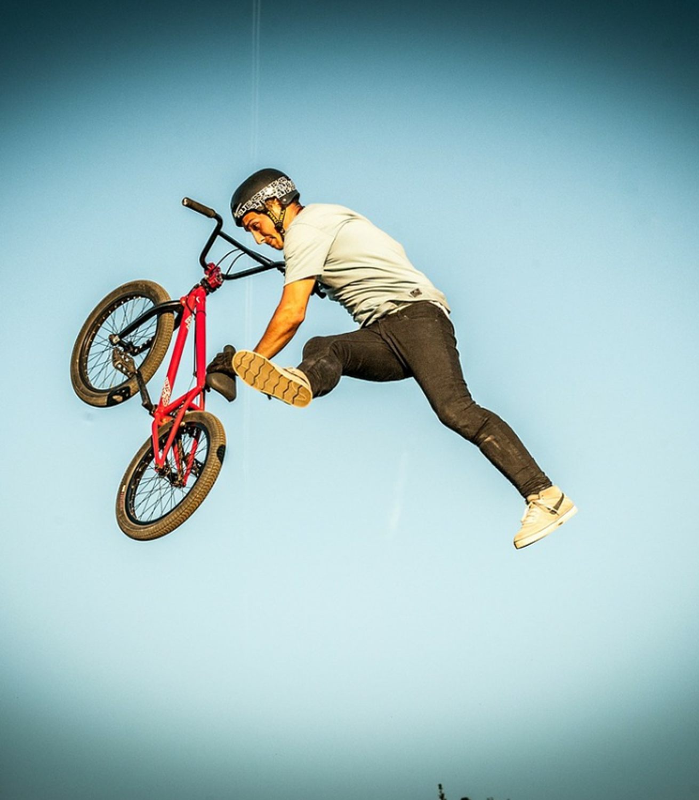

Что такое скелетон?
Скелетон — это трюк, который выполняется в воздухе, при этом райдер делает разворот, активно управляя велосипедом, используя движение рук и ног для полной стабилизации. Этот трюк в основном используется в стрит- и парковых катаниях, потому что он требуетне только хорошего контроля, но и большого мастерства.
